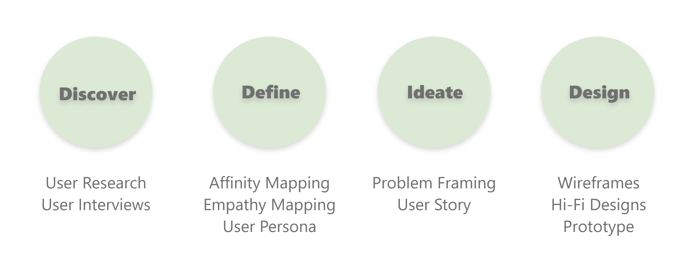

Project Context
The purpose of this project was to research the care practices of plant owners.
Accumulating plants inspired the question, "What would be the best wat to care
for multiple plants with different requirements?" A study by NASA revealed that
keeping plants in the home can eliminate up to 87% of toxins in the air within
24 hours. This emphasizes that keeping plants in the home is beneficial for our
health and learning how to properly care for plants can promote sustainability.
- Team: Individual
- Timeframe: 5 Weeks
Problem Statement
In the area of routines and habits, it is suspected that plant owners are over or under watering their plants due to varying watering and environmental requirements.
Possbile Solution
A solution would be to provide an app that matches plants to people based on their lifestyle and living environment.
Design Process
Discover Phase
It was necessary to conduct interviews to determine if there were common behaviors among plant owners ranging from very experienced to novice. I Interviewed three participants to assess the routines within the range of plant owners. The purpose of the interviews was to get a better understanding of what plant owners find challenging about plant maintenance.
User Interviews
User Interview Questions:
Interview Insights
Quotes:
“We put water in it and left it outside for a couple of days and it came back to life.”
“I put in Google what is wrong with what I see and what to do.”
“If there was some sort of device or reminder that knew when the plant needed to be watered, it could tell me and then I could water the plant.”
Insights From Quotes:
- Users are unable to look for signs of improper plant care.
- Users will take the time to become informed about their plants.
- Users will benefit from getting help with their plant care.
Define Phase
After doing research, I observed that plant owners do not care for plants properly because they uninformed of what each plant needs. This is a problem because each plant may have different care requirements to thrive.
Affinity Map
I collaborated with my cohorts to analyze the responses from the user interviews.

Empathy Map
I found subjects with different experiences owning plants to see if I could find
any differences between their routines and habits with plant care.
User Persona:
Ideate Phase
How Might We Questions:

User Story:
In this story board, the user acquires a new plant. After watering, the user
notices that the plant is no longer thriving. The user finds an app to determine
the best plant for their lifestyle. The user then gets a new plant based on the
recommendations and the app provides information on how to properly care for the
plant such as watering reminders and how much light to provide. The user then
feels confident enough to purchase more plants.
Design Phase
Wireframing:

Prototype:
I created a prototype design for users to complete a quiz by inputting
information about where they live, type of climate, lifestyle habits, etc. The
app then presents a list of plants to the user that would best suit their needs
and where the user can purchase each recommended plant.
The user can keep a record of all the plants they own as well as information on
when each plant needs a specific care action. The user can also build their
knowledge base of their own plants and determine which plants would be best for
them without using the plant match quiz.

Conclusion
My Insights:
My biggest takeaway from this case study was that users are more
reliant on searching for information to learn more about their plants. Users are also more
likely to look up information about their plants when they are not doing well. The user
interview analysis disproved the initial hypothesis. The fact that the users had trouble
in maintaining a watering schedule, was a minor paint point.
Future Concepts
For future reference, I would like to expand my research to
users in other areas and a wider range of ages. It will also be important to consider the
type of climates a variety of users may live in which would determine how well plants may
thrive in a particular type of environment.